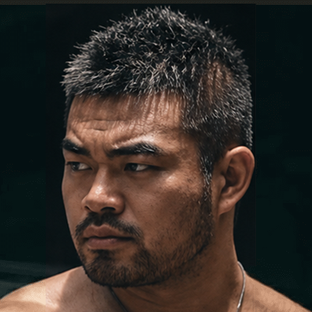
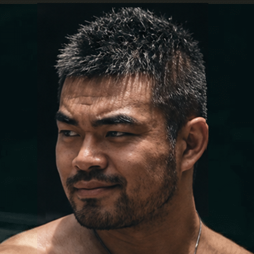

“弗兰克。”
你轻声唤道。

“嗯？” 弗兰克没有抬头，手里正拿着那个巨大的枪口制退器，在灯光下检查着内壁的积碳，“怎么了，宝贝？那本破书里写了什么把你吓到的东西吗？”你站起身，走到弗兰克身边。看着那些散发着寒光的枪械零件，那种属于现代工业的暴力美感让你感到了一丝久违的安全感。
“那个‘美国人’。” 你的声音低沉，“他并没有在沙漠里迷路。他在那里建立了一个前哨站。而且……麦克维尔提到了一种生物。他说那种东西‘看不见，却能像风一样把人的肉从骨头上剥下来’。”
弗兰克的手动作停滞了一瞬。他慢慢抬头，摘下墨镜，露出一双如同鹰隼般锐利的眼睛。

“看不见的敌人？” 弗兰克咧嘴一笑，那笑容里带着一股嗜血的狠劲，“那最好不过了。看不见的东西，通常也躲不开这种口径的子弹。”